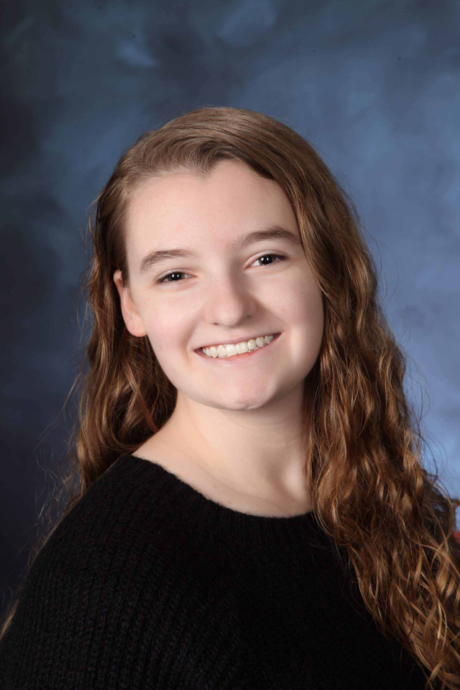

Kylie Papa
Hi! I'm Kylie! I'm a first-semester Freshman from Newport Beach, CA.
I am majoring in Software Engineering and double-minoring in Computer Science and Technical Theatre, and I hope to pursue a dual career as both a Software Engineer and Theatre Technician.
I'm on the spring/fall track, but will be attending all three semesters this year
Besides my areas of study, which I've enjoyed for several years now, some other hobbies of mine include cooking, video editing, biking, and learning ASL.